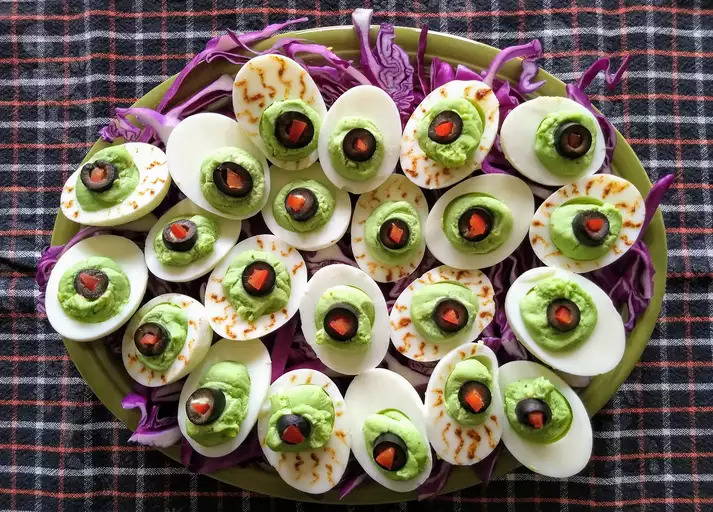

Halloween Eye of Newt

Description
Bubble, bubble. Toil and trouble. This appetizer is commonly known and used but, I have put my own little twist on this recipe. It is deviled eggs made to look like the eyeballs of a lizard. It a hit with the kids at my Halloween party. Watch them get eaten up at your party!
Ingredients
- 12 eggs
- 1 tablespoon sweet pickle relish
- 1 tablespoon mayonnaise
- 1 pinch celery salt
- 1 tablespoon prepared yellow mustard
- 2 drops green food coloring, or as needed
- 1 (6 ounce) can sliced black olives, drained
Steps
- Place all of the eggs into a large pot so they can rest on the bottom in a single layer. Fill with just enough cold water to cover the eggs. Bring to a boil, then cover, remove from the heat and let stand for about 15 minutes. Rinse under cold water or add some ice to the water and let the eggs cool completely. Peel and slice in half lengthwise.
- Remove the yolks from the eggs and place them in a bowl. Mix in the relish, mayonnaise, celery salt, mustard, and food coloring. Spoon this filling into the egg whites and place them on a serving tray. Round the top of the filling using the spoon. Place an olive slice on each yolk to create the center of the eye. Dab a tiny bit of mayonnaise in the center of the olive as a finishing touch.